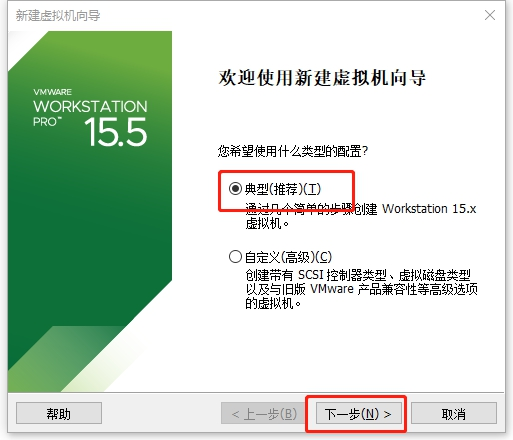
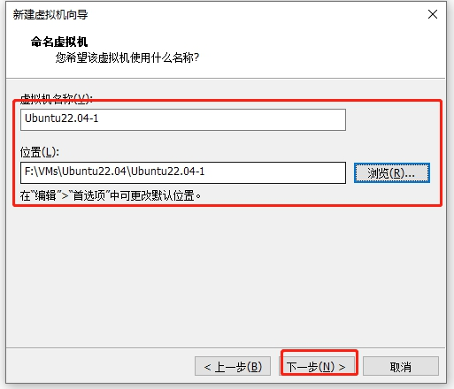
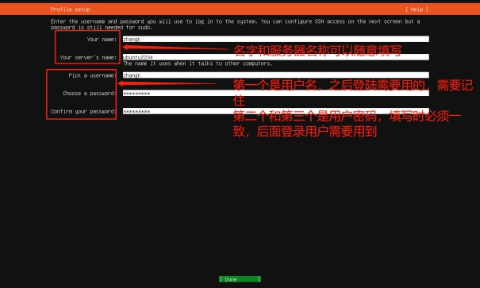
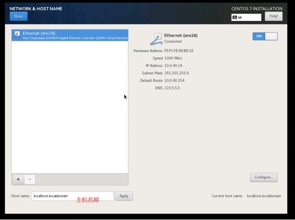

一周的作业
[TOC]
一、 开源协议GPL、BSD、MIT、Mozilla、Apache、LGPL们的区别
1.开源协议的选择逻辑图
通过下图直观清晰的来划分各种协议：开源许可证GPL、BSD、MIT、Mozilla、Apache和LGPL的区别：
2.开源协议描述
LGPL
LGPL是GPL的一个为主要为类库使用设计的开源协议。和GPL要求任何使用/修改/衍生之GPL类库的的软件必须采用GPL协议不同。LGPL 允许商业软件通过类库引用(link)方式使用LGPL类库而不需要开源商业软件的代码。这使得采用LGPL协议的开源代码可以被商业软件作为类库引用并发布和销售。
但是如果修改LGPL协议的代码或者衍生，则所有修改的代码，涉及修改部分的额外代码和衍生的代码都必须采用LGPL协议。因此LGPL协议的开源代码很适合作为第三方类库被商业软件引用，但不适合希望以LGPL协议代码为基础，通过修改和衍生的方式做二次开发的商业软件采用。
GPL/LGPL都保障原作者的知识产权，避免有人利用开源代码复制并开发类似的产品
MPL
MPL是The Mozilla Public License的简写，是1998年初Netscape的 Mozilla小组为其开源软件项目设计的软件许可证。MPL许可证出现的最重要原因就是，Netscape公司认为GPL许可证没有很好地平衡开发者对源代码的需求和他们利用源代码获得的利益。同著名的GPL许可证和BSD许可证相比，MPL在许多权利与义务的约定方面与它们相同（因为都是符合OSIA 认定的开源软件许可证）。但是，相比而言MPL还有以下几个显著的不同之处:
MPL虽然要求对于经MPL许可证发布的源代码的修改也要以MPL许可证的方式再许可出来，以保证其他人可以在MPL的条款下共享源代码。但是，在MPL 许可证中对“发布”的定义是“以源代码方式发布的文件”，这就意味着MPL允许一个企业在自己已有的源代码库上加一个接口，除了接口程序的源代码以MPL 许可证的形式对外许可外，源代码库中的源代码就可以不用MPL许可证的方式强制对外许可。这些，就为借鉴别人的源代码用做自己商业软件开发的行为留了一个豁口。
MPL许可证第三条第7款中允许被许可人将经过MPL许可证获得的源代码同自己其他类型的代码混合得到自己的软件程序。
对软件专利的态度，MPL许可证不像GPL许可证那样明确表示反对软件专利，但是却明确要求源代码的提供者不能提供已经受专利保护的源代码（除非他本人是专利权人，并书面向公众免费许可这些源代码），也不能在将这些源代码以开放源代码许可证形式许可后再去申请与这些源代码有关的专利。
对源代码的定义：而在MPL（1.1版本）许可证中，对源代码的定义是:“源代码指的是对作品进行修改最优先择取的形式，它包括:所有模块的所有源程序，加上有关的接口的定义，加上控制可执行作品的安装和编译的‘原本’（原文为‘Script’），或者不是与初始源代码显著不同的源代码就是被源代码贡献者选择的从公共领域可以得到的程序代码。”
MPL许可证第3条有专门的一款是关于对源代码修改进行描述的规定，就是要求所有再发布者都得有一个专门的文件就对源代码程序修改的时间和修改的方式有描述。
GPL
GPL协议和BSD, Apache Licence等鼓励代码重用的许可很不一样。GPL的出发点是代码的开源/自由使用和引用/修改/衍生代码的开源/自由软件，但不允许修改后和衍生的代码做为闭源的商业软件发布和销售。这也就是为什么我们能用免费的各种linux，包括商业公司的linux和linux上各种各样的由个人，组织，以及商业软件公司开发的自由软件了。
GPL协议的主要内容是只要在一个软件中使用(”使用”指类库引用，修改后的代码或者衍生代码)GPL 协议的产品，则该软件产品必须也采用GPL协议，既必须也是开源和免费。这就是所谓的”传染性”。GPL协议的产品作为一个单独的产品使用没有任何问题，还可以享受免费的优势。
由于GPL严格要求使用了GPL类库的软件产品必须使用GPL协议，对于使用GPL协议的开源代码，商业软件或者对代码有保密要求的部门就不适合集成/采用作为类库和二次开发的基础。
其它细节如再发布的时候需要伴随GPL协议等和BSD/Apache等类似。
BSD
BSD开源协议是一个给于使用者很大自由的协议。基本上使用者可以”为所欲为”,可以自由的使用，修改源代码，也可以将修改后的代码作为开源或者专有软件再发布。
但”为所欲为”的前提当你发布使用了BSD协议的代码，或则以BSD协议代码为基础做二次开发自己的产品时，需要满足三个条件：
如果再发布的产品中包含源代码，则在源代码中必须带有原来代码中的BSD协议。
如果再发布的只是二进制类库/软件，则需要在类库/软件的文档和版权声明中包含原来代码中的BSD协议。
不可以用开源代码的作者/机构名字和原来产品的名字做市场推广。
BSD 代码鼓励代码共享，但需要尊重代码作者的著作权。BSD由于允许使用者修改和重新发布代码，也允许使用或在BSD代码上开发商业软件发布和销售，因此是对商业集成很友好的协议。而很多的公司企业在选用开源产品的时候都首选BSD协议，因为可以完全控制这些第三方的代码，在必要的时候可以修改或者二次开发。
MIT
MIT是和BSD一样宽范的许可协议,作者只想保留版权,而无任何其他了限制.也就是说,你必须在你的发行版里包含原许可协议的声明,无论你是以二进制发布的还是以源代码发布的
Apache
Apache Licence是著名的非盈利开源组织Apache采用的协议。该协议和BSD类似，同样鼓励代码共享和尊重原作者的著作权，同样允许代码修改，再发布（作为开源或商业软件）。需要满足的条件也和BSD类似：
需要给代码的用户一份Apache Licence
如果你修改了代码，需要再被修改的文件中说明。
在延伸的代码中（修改和有源代码衍生的代码中）需要带有原来代码中的协议，商标，专利声明和其他原来作者规定需要包含的说明。
如果再发布的产品中包含一个Notice文件，则在Notice文件中需要带有Apache Licence。你可以在Notice中增加自己的许可，但不可以表现为对Apache Licence构成更改。
Apache Licence也是对商业应用友好的许可。使用者也可以在需要的时候修改代码来满足需要并作为开源或商业产品发布/销售。
二、Linux常见系统安装
1.Ubuntu22.04
1.虚拟机创建

2.这一步选择“稍后安装操作系统”
3.选择“客户机操作系统”和“版本”然后下一步
4.“虚拟机名称”和“位置”可以默认，也可以按需求修改

5.这里建议大家按自己需求来选择，如果不知道怎么选择可以参照文档操作；
对单文件和多文件做一下补充（了解一下）：
单文件：在磁盘内容相对稳定时，访问速度相比多文件会快一点，但是如果虚拟磁盘增长很快，或容量变化很大，可能会产生大量碎片，性能将会明显下降。但有一个缺点如果单文件受损，就相当于整个磁盘丢失，代价较大。
多文件：多文件可以减轻压力，单文件容易造成系统负载大。单文件占用的是磁盘上的某一连续区域，读取速度快占用内存大。多文件分散在各个扇区读取速度一般但是占用内存小。
6.选择“自定义硬件”
这里我的配置为2G内存和2核处理器，由于是测试机所以配置不高，需要高配置可以在“自定义硬件”中针对“设备”做调整。
7.“编辑虚拟机”
默认选择English，下一步
默认选择不更新，下一步
语言默认使用英语，下一步
默认第一个选项，下一步
IP地址默认使用DHCP分配，下一步
代理可以不用设置，下一步
镜像地址国内最好还是改为阿里云或者清华大学
通过Tab键切换选项
阿里云：https://mirrors.aliyun.com/ubuntu/
清华大学：https://mirrors.tuna.tsinghua.edu.cn/ubuntu/
默认，下一步
分区默认，下一步
这是会问是否选择继续，选择继续
填写账号相关信息，下一步

注意：一定要用”空格键“将Install OpenSS server选中后再下一步
无需修改，下一步
最后就是等待安装完毕
选中Reboot，然后等待重启
这里提示移除安装介质可以不用管，直接按下确定键即可
这里输入刚刚设置的账号密码即可登录系统，到这一步系统就安装完成了。
2.Centos7.9
1.由于创建虚拟机和上面是一样的，所以就不重复，直接进入安装界面
2.选择第一项进行安装配置
3.现在来到语言选择界面，在该界面所选择的语言将成为默认的系统语言，这里我就直接默认下一步
4.系统安装前需要做一些设置，由于我之前选的语言是英语，所以这里我需要修改一下“时间和时区”
5.将时区选择为上海，如果这一步没有设置，可进入系统通过命令实现
6.时区修改完毕后点Done，下面开始设置分区，这里特别需要注意的“SWAP”交换分区最好容量分配不要超过2G！其余分区可按计算机配置自行分配大小

7.完成分区后，选择软件的安装，由于我需要的是最小化安装，这里我就不修改了。如果需要图形界面可以选择server with GUI
8.接下来设置网卡，根据图片内提示进行网卡的设置
9.主机名称我这里选择了默认，如果有什么需要可以自行修改

10.这是本次安装所有操作过的选择，之后就是安装
11.设置root密码和用户，root密码尽量复杂一点，普通用户可以简单一些，设置完毕后就等待安装结束然后重启
12.重启后，输入刚刚root账户密码就可以登录系统了
三、Linux中总结
1. 如何通过一个简短的关键字，例如process 获取相关的命令。
1.1TAB补全查找
1.2通过man命令进行查询
1.3通过谷歌、百度等途径搜索
2. 通过命令的描述，选择一个命令，获取命令的man文档
3. 解读man文档，man分几个部分？
man页面包含杂项.
1 通用命令
2 系统调用
3 库调用
4 设备文件
5 配置文件
6 游戏
7 杂项
8 系统管理命令
9 内核相关的
Name: 描述命令名，Synopsis: 概要，Configuration: 配置详情，Description: 描述，Options: 命令行选项，Exit Status: 退出状态，Return Value: 返回值Errors: 错误相关，Environment: 环境变量，Files: 程序会使用哪些配置文件，Attributes: 命令的相关属性，Versions: 程序某些库显著改变相关的版本，Notes: 一些备注，Bugs: 已知bug，提交bug，Examples: 命令使用示例，Authors: 编写，维护命令的作者们，See also: 命令相关的命令，
3.1man每个部分的解释，特别是语法部分。
如man -C 文件
3.2<>, [] …等各代表什么含义
[] 可以省略，[[] <>] 使用括号中的内容时，选项可以省略，值不能省略。如果有多个此类形式，就需要参数。如果此形式在命令紧随其后，我们可以省略选项
一般运行一个命令，可以忽略所有[]中的内容
4.根据语法部分 简要的写几个操作
四、/etc/fstab文件的详细解述
切换到/etc/目录列出，fstab文件的详细信息，详细解述fstab一行，每个或每几个字符的详细含义。
#号开头行是注释
/dev/mapper/rl-root / xfs defaults 0 0
目录 挂载位置 文件系统 默认挂载选项 不备份不自检
五、简要说明FHS结构
/目录是Linux的总目录
/bin二进制程序，普通用户使用的工具
/sbin二进制程序，给管理员使用的工具
/boot存放有关于启动的文件及内核文件
Linux是指的内核
/dev存放各类硬件
/etc放置各种配置文件（核心
/home用户\家目录
/root系统管理员目录
/run临时存放程序文件
/tmp临时文件
/var变化数据
/var/log日志文件目录
/usr系统文件目录
/lib及lib64存放程序的库
/mnt及mdeit用于挂在外置设备使用
/proc及sys假目录，存放内存目录
/opt及srv用于安装第三方软件的目录
六、相关命令理解总结
文件管理
#mv 移动文件或目录
#rm 删除文件或目录
#cp 复制
#touch 创建文件
#mkdir 创建目录
#cat 查看文件
用户管理
#useradd 创建
#usermod 修改
#userdel 删除
组用户
#groupadd 创建
#groupmod 修改
#groupdel 删除
权限管理
#chown 文件用户修改
#chgrp 文件属组修改
#chmod 文件权限修改
#chattr 添加文件特殊属性
本博客所有文章除特别声明外，均采用 CC BY-SA 4.0 协议 ，转载请注明出处！